Use this guide to map functionality in the Coinbase trading interface to the same functionality provided in your TT® workspace.
For the items labeled in the following Coinbase trading interface...
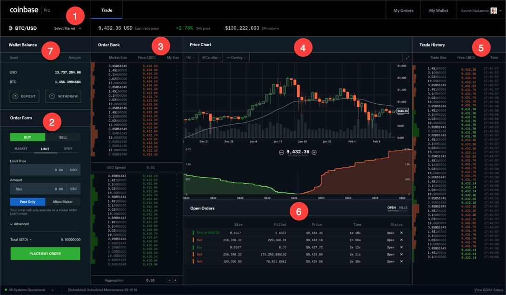
...the widgets that provide the same trading functionality and more are labeled in the following TT workspace.
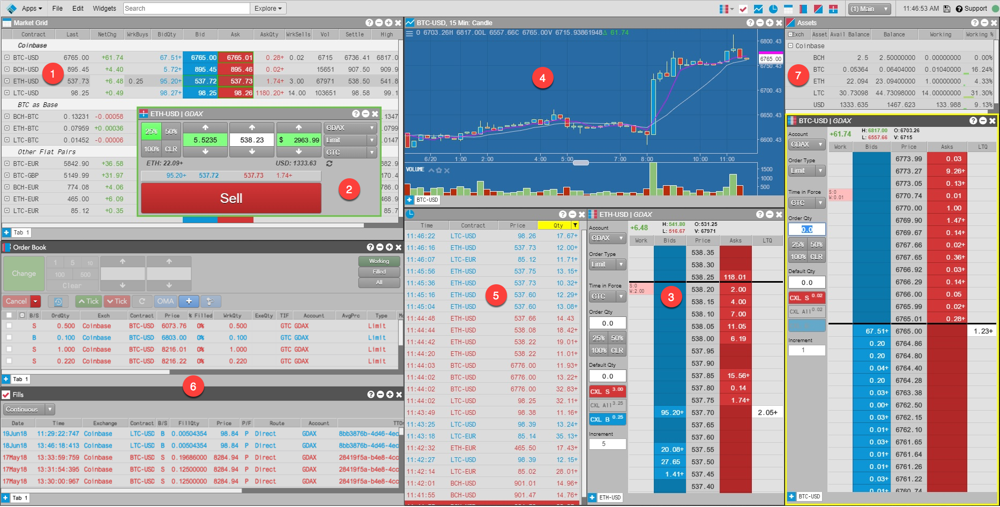
The following widgets are labeled in the TT workspace above (equivalent Coinbase trading interface name is in parenthesis):
There are a few key differences between the Coinbase and TT workspaces:
The Market Grid widget displays volume and pricing information for a list of selected instruments similar to the Coinbase Title Bar, which displays trading volume and price information for a selected product.
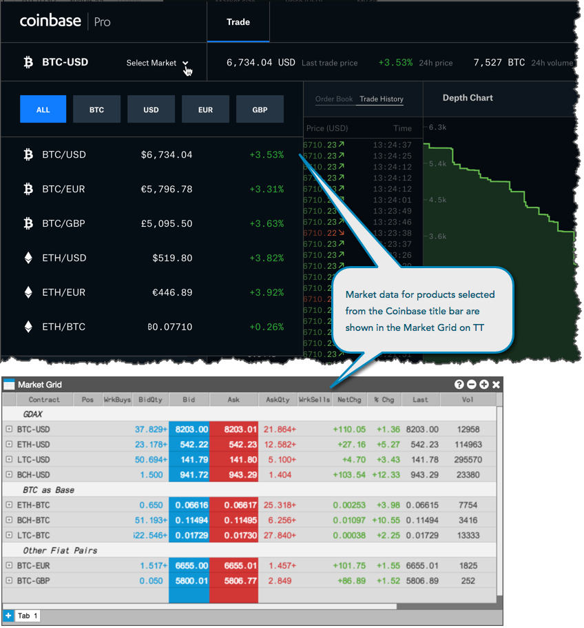
Similar to using the Coinbase Title Bar, you can use the Market Grid to:
In addition, you can also use TT's Market Grid to:
The Order Ticket can be launched from the Market Grid widget. Select an order type and Time-In-Force, then enter an order quantity and price and click "Buy" or "Sell" to submit the order.
Note: You must log into Coinbase to move funds between your Coinbase wallet and your Coinbase account to make these funds available for trading in TT.
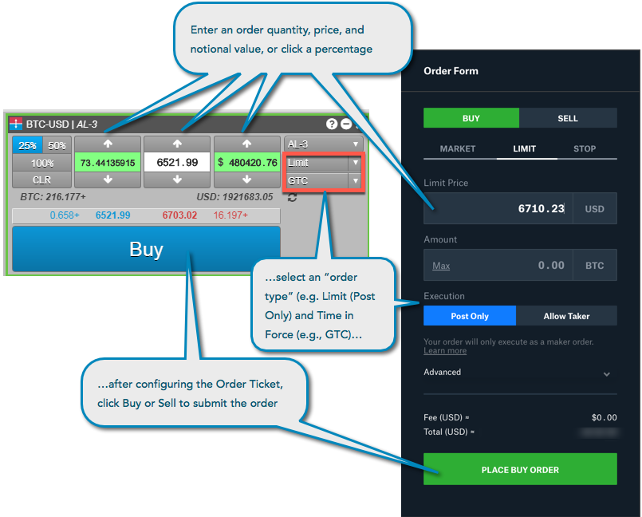
Similar to using the Order Form, you can use the Order Ticket to:
In addition, you can also use TT's Order Ticket to:
The Coinbase Order Book provides users with "market size" or market depth and the "spread" or inside market between the best Bid and Ask, as well as the volume at each price level. In TT, this information is provided in the MD Trader widget.
Similar to using the Coinbase Order Book, you can use MD Trader to:
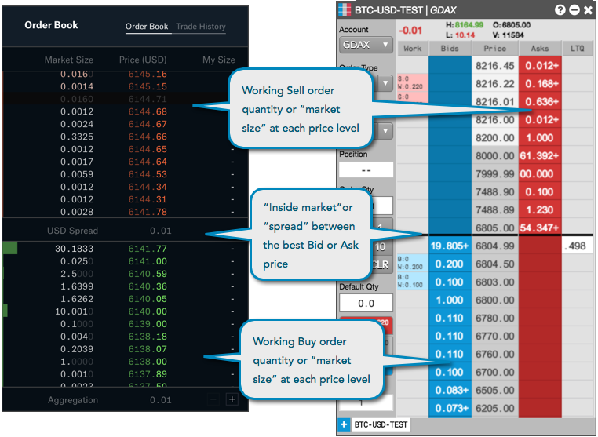
With MD Trader you can place an order with a single click directly at each price level. You can also see any orders you have working in the market.
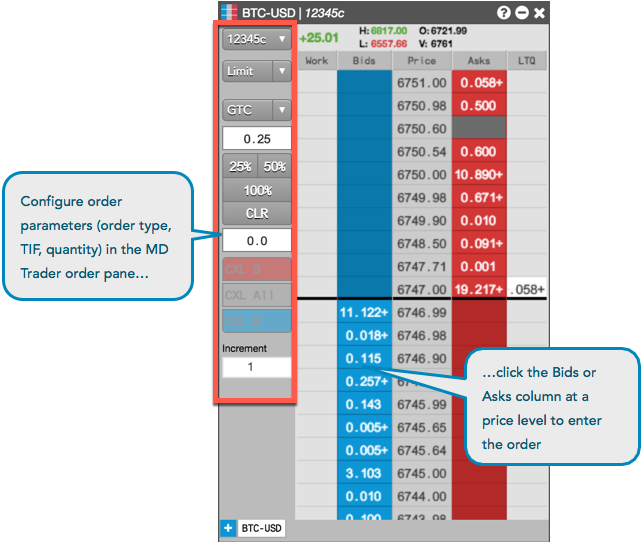
In addition to placing an order with a single click, you can use TT's MD Trader to:
TT's Charts widget also fully integrates charting and analytics into TT Cryto by blending historical time series data with continuous real-time market data updates.
On Coinbase, the Price Chart shows historical price data at user-defined time intervals. In addition, you can also view the Depth Chart, which graphically displays the market depth from the Coinbase Order Book.
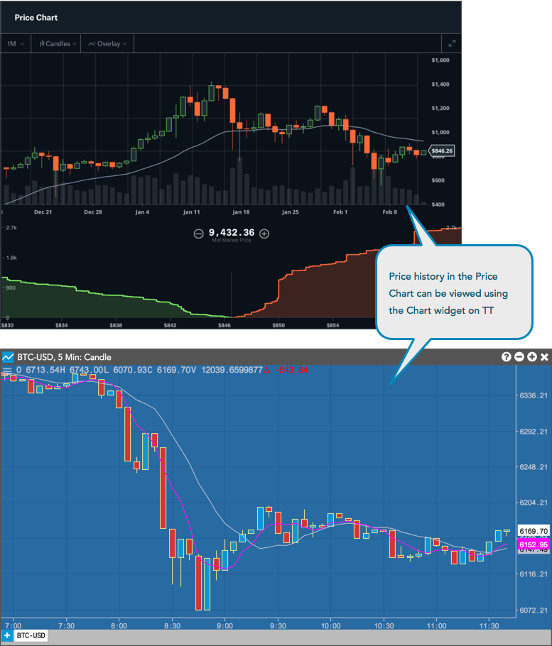
Similar to using the Coinbase Price Chart, you can use the Charts widget to:
Using TT's Charts widget, you can also:
Similar to the Coinbase Open Orders section, TT's Order Book widget shows your working (open) orders in the market and provides you with the ability to cancel each working order.
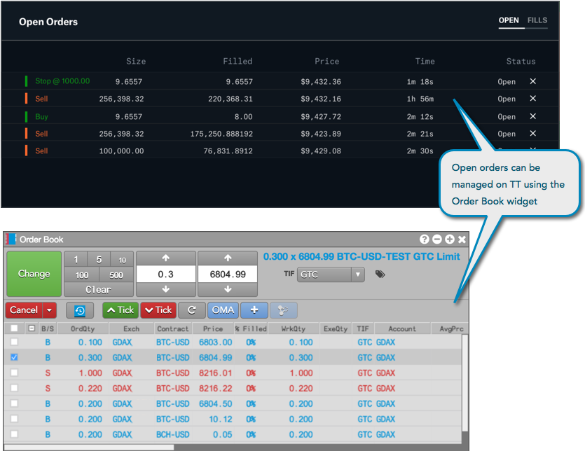
With TT's Order Book widget, you can also:
Similar to the Fills displayed in the Coinbase trading interface, the Fills widget on TT shows the time and price of all fully or partially filled orders.
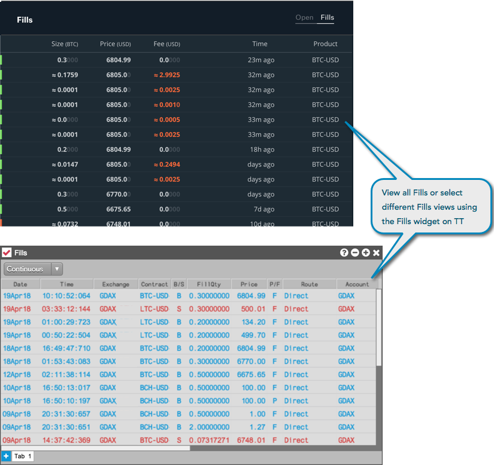
With TT's Fills widget, you can also:
The trades executed in the market for an individual currency are shown under Trade History in the Coinbase trading interface. In TT, these are displayed using the Time and Sales widget. Users can access historical Time and Sales data by scrolling to the bottom of the widget screen. The Time and Sales widget on TT maintains and displays a history of trade data from all of your sessions and not just for the current session.
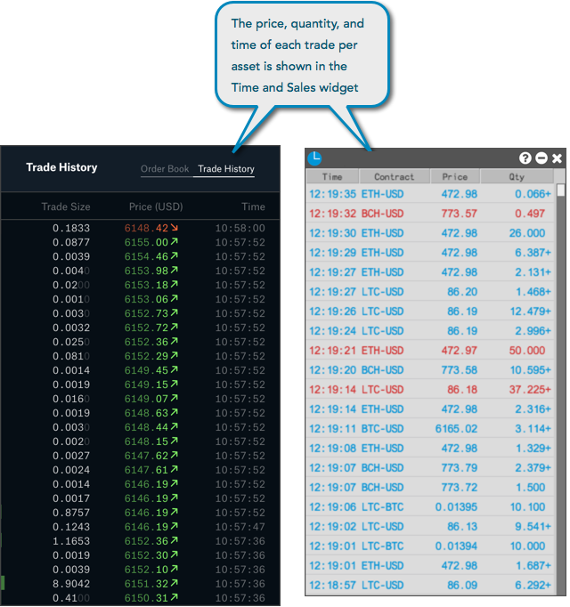
Similar to Coinbase Trade History, the Time and Sales widget displays:
With TT's Time and Sales widget, you can also:
To see the funds currently available for trading in TT, you can use the Assets Widget.
Note: You cannot make deposits or withdrawals on TT. Your Coinbase account can only be funded from your Coinbase wallet using the Order Form.
The Wallet Balance section of the Order Form also allows you to transfer funds between your Coinbase wallet and your Coinbase Pro account and view the balance of each asset.
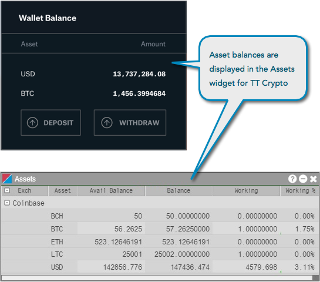
When trading Coinbase products on TT, you may also want to: